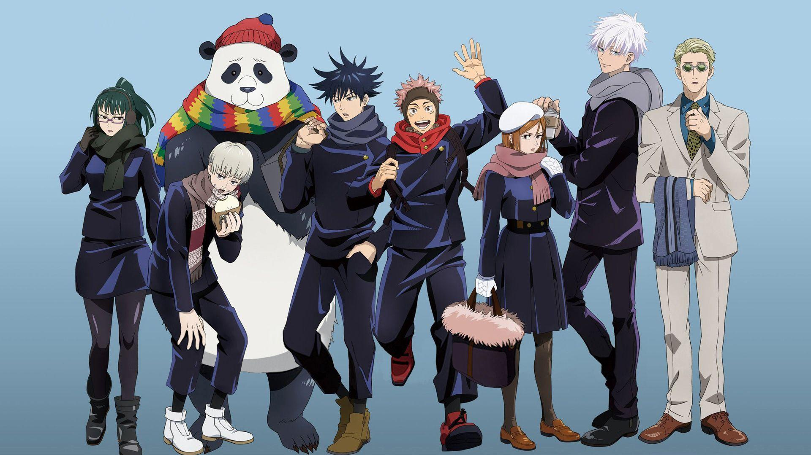

Anime
>^^ >^^ Dan Da Dan ^^< ^^<

Aliens, ghosts, and chaotic humor collide in a fast-paced, unpredictable anime that leaves you wanting more.
+~+~+ One Piece +~+~+

A legendary journey of pirates, treasure, and friendship. It’s not just about finding treasure, it’s about the journey itself.
~*~*~ Jujutsu Kaisen ~*~*~
Dark curses, epic fights, and a powerful mix of action and emotion that keeps you hooked until the very end.
Gaming
*^-^* Animal Crossing *^-^*

Build your dream island, relax with cute neighbors, and escape into cozy everyday adventures.
* * * Kingdom Come: Deliverance 2 * * *

A gritty medieval RPG where every decision shapes your path in a realistic world.